Module 4 · Multimedia Presentation Fundamentals
Application Navigation and Slide Management
Find your way around PowerPoint, Google Slides and Impress, then add, arrange and present slides with confidence.
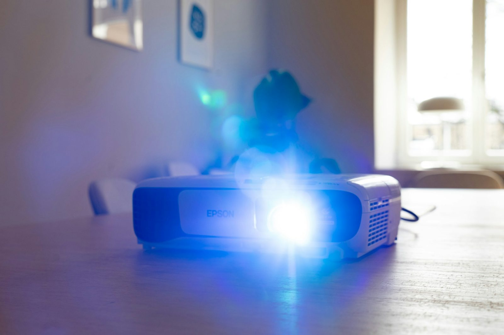
Welcome back. In 4.1 we planned our Lab 4 deck on paper. Now we open the app and turn those boxes into real slides.
I'll demo in PowerPoint because most office desktops have it, and I'll name where things are in Google Slides and LibreOffice Impress. Ask everyone to open their presentation app now and keep their storyboard paper beside the keyboard.
Warm-up · type in the chat
Which presentation app will you use for Lab 4?

A
Microsoft PowerPoint

B
Google Slides
C
LibreOffice Impress
D
Not sure / something else
Ask for A, B, C or D in the chat. Expect mostly A. Some may use Google Slides on a personal Gmail account. A few may only have WPS or Canva at home: tell them WPS Presentation looks very similar to PowerPoint, and Canva works for the concepts but the lab asks for a standard presentation app.
Tell those who answered D to use Google Slides in the browser: it's free with any Google account and needs no installation.
By the end of this topic
You will be able to…
Name the parts of the window
Slide pane, thumbnails, ribbon or menus, notes pane, status bar.
Add, duplicate, delete, reorder and hide slides
Using themes, layouts, the slide sorter and sections.
Run a slide show and save a PDF
Views, show keys like F5 and B, and exporting.
Three goals: navigate, manage, present. This topic is very hands-on, so expect two "Try it now" activities.
Promise them a concrete result: at the end of 45 minutes, every participant has a saved Lab 4 file with a consistent theme, varied layouts and five slides. That already covers two of the Lab 4 grading points.
The apps · like driving any brand of jeep
Three apps, same driving skills
Microsoft PowerPoint
On most office PCs and on the web. Saves as .pptx. Commands live in the Ribbon tabs.
Google Slides
In the browser; saves automatically to Google Drive; easy to share and co-edit. Menus + toolbar.
LibreOffice Impress
Free and open source. Saves as .odp, and can open and save .pptx. Menus + Sidebar.
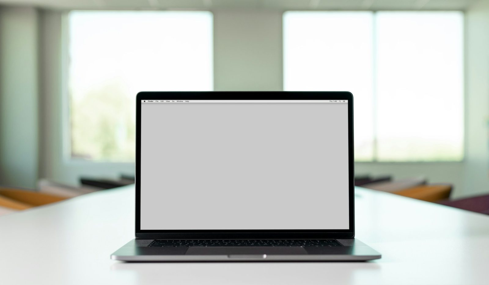
Use the jeepney idea from Module 1: whether it's a Sarao or a Francisco jeep, the steering wheel, brake and gears are where you expect. Same here: slides, layouts, themes and slide show exist in all three apps.
Mention real office life: you may build a briefing in PowerPoint at the office and finish it in Google Slides at home. It works, but check fonts and spacing after switching.
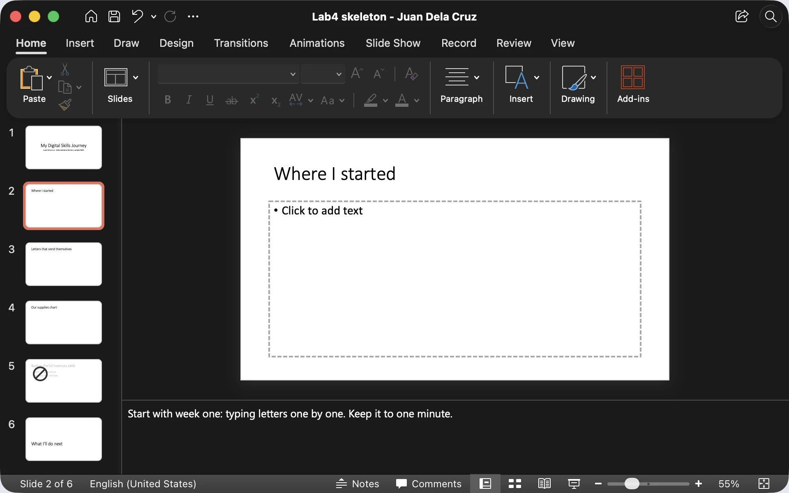
Microsoft PowerPoint for Mac, sample Lab 4 skeleton. On Windows the Ribbon starts with a File tab (Backstage view); on a Mac, File is in the menu bar.
The window · PowerPoint shown
Five parts to know by name
- Ribbon: tabs of commands (Home, Insert, Design…). Google Slides and Impress use menus and a toolbar.
- Thumbnails: every slide in order. Click to jump, drag to reorder.
- Slide pane: the big slide you edit.
- Notes pane: your speaker notes. The audience doesn't see them.
- Status bar: slide number, Notes button, views and zoom.
Share your real PowerPoint window beside this one. Click through the five frames and point to each part as you say its name: ribbon, thumbnails, slide pane, notes pane, status bar. The screenshot is PowerPoint for Mac in dark mode; Windows looks the same apart from the File tab at the left of the Ribbon.
If someone can't see the notes pane, click Notes on the status bar, or View, Notes. In Google Slides, the notes area is under the slide too: View, Show speaker notes. Ask: "What slide number does your status bar show right now?"
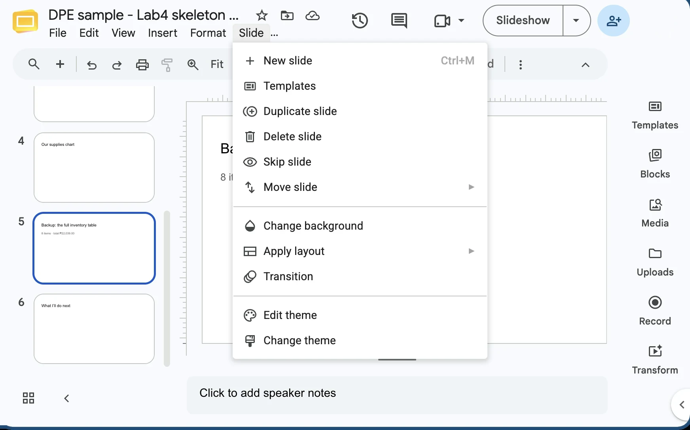
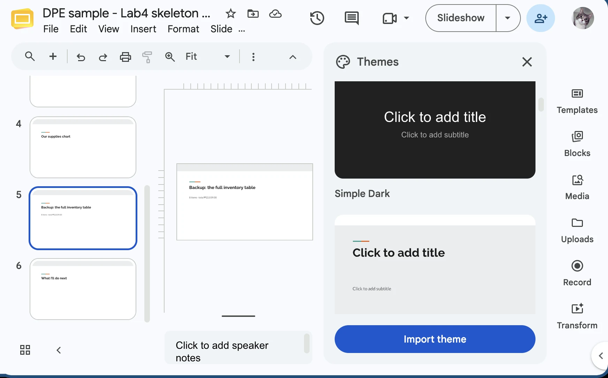
Google Slides, sample Lab 4 skeleton. PowerPoint: Design tab › Themes, then Variants. Impress: Sidebar › Master Slides.
Themes
Pick one theme for the whole deck
A theme sets the colours, fonts and backgrounds of every slide at once. That gives you repetition for free.
- Slide › Change theme (PowerPoint: the Design tab).
- Click one theme in the panel: all six slides change together.
Demo: Design tab in PowerPoint, hover over themes to preview, click one, then try a Variant. The screenshots show the same job in Google Slides: Slide, Change theme, click a theme, and every thumbnail changes together.
Lab 4 asks for a consistent theme or background, so apply the theme once and don't recolour slides one by one. Ask: "Which theme would still be readable on a projector in a bright hall?" A clean light or dark one, not a busy pattern. Remind them of 4.1: the theme is decoration; it comes after the message.
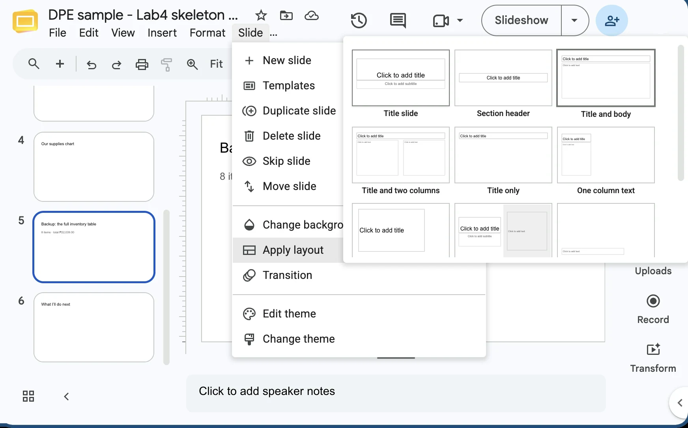
Google Slides, sample Lab 4 skeleton. PowerPoint: Home › Layout lists the same kinds with Windows names.
Slide layouts · Home › Layout
Choose a layout for each slide's job
- Select a thumbnail, then Slide › Apply layout (PowerPoint: Home › Layout).
- Title Slide (Google: Title slide): the first slide, title, your name, date.
- Title and Content (Title and body): the workhorse for bullets, a chart or a picture.
- Section Header: starts a new part, "What I learned".
- Two Content (Title and two columns): before and after. Blank for a full photo.
Demo: Home, Layout in PowerPoint, and change a slide's layout. The content moves into the new placeholders. The screenshots show Google Slides: Slide, Apply layout. Impress lists its layouts in Sidebar › Layouts.
Lab 4 asks for varied layouts, for example a Title Slide plus Title and Content. Look at the storyboard: box 1 is a Title Slide, the proof slides are Title and Content or Two Content, and the closing slide could be a Section Header or Blank with one big sentence. Ask them to label each box on their paper with a layout name.
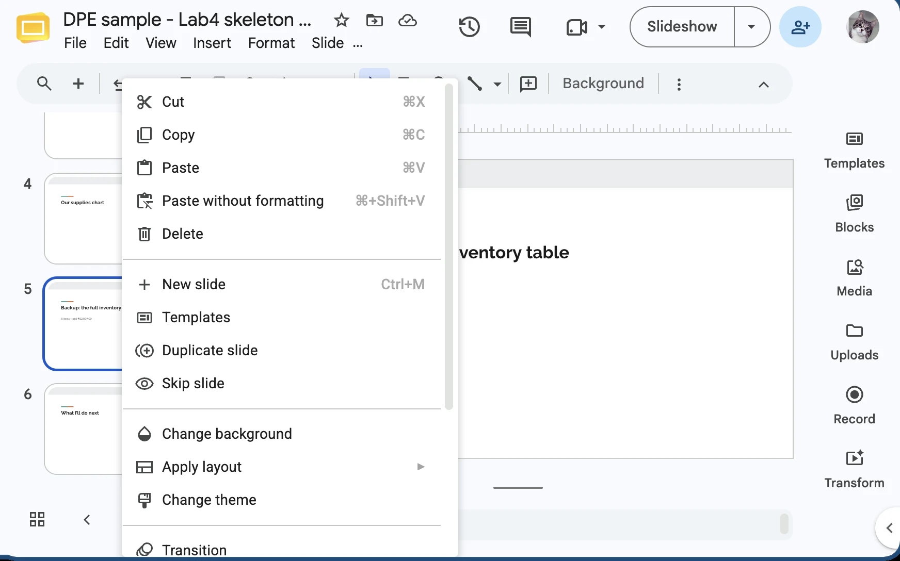
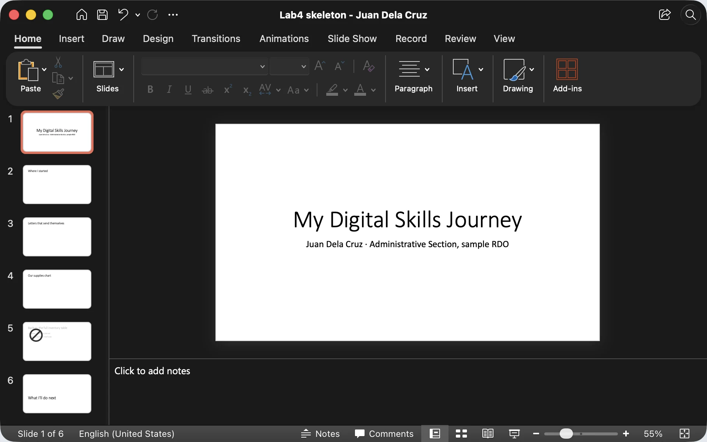
Right-click menu: Google Slides (PowerPoint has New Slide, Duplicate Slide, Delete Slide, Hide Slide). Last frame: PowerPoint for Mac.
Managing slides · in the thumbnails pane
Add, duplicate, delete, reorder
- Ctrl + M: New slide (PowerPoint and Google Slides). Or Home › New Slide.
- Ctrl + D: Duplicate the selected slide, keeping its layout and formatting.
- Delete: delete the selected thumbnail. Ctrl + Z undoes a wrong one.
- Reorder: drag a thumbnail up or down.
Mac: Cmd in place of Ctrl; PowerPoint for Mac new slide is Cmd + Shift + N.
Demo each one slowly in the thumbnails pane: Ctrl+M for a new slide, Ctrl+D to duplicate, Delete, then drag to reorder. Undo with Ctrl+Z. The screenshots show the right-click menu in Google Slides; PowerPoint's right-click menu has the same commands (New Slide, Duplicate Slide, Delete Slide, Hide Slide, Layout).
The right-click menu is the safest route for beginners because everything is listed. Stress the pro habit: duplicate a finished slide so titles stay in the same place. That's the repetition principle from 4.1, done by the app for you.
Try it now · in your app
Build the skeleton of your Lab 4 deck
- Start a new blank presentation and apply one clean theme.
- Slide 1 (Title Slide): My Digital Skills Journey + your name.
- Add 4 more slides with Ctrl+M. Give each the layout you wrote on your paper.
- Type only the titles from your storyboard. Content comes later.
- Duplicate one slide, then delete the copy. Drag one slide to a new position and back.
- Save as Lab4 - Your Name.pptx (or .odp in Impress).
Start the 6-minute timer. This is the first real step of Lab 4.
Watch the chat for "done" and for questions. Common issues: they can't find Layout (it's on the Home tab), or the new slide comes out as Title Only. Ask one or two people to share their screen briefly so others can see a finished skeleton. Remind Google Slides users their file saves automatically, but they should rename it at the top left.
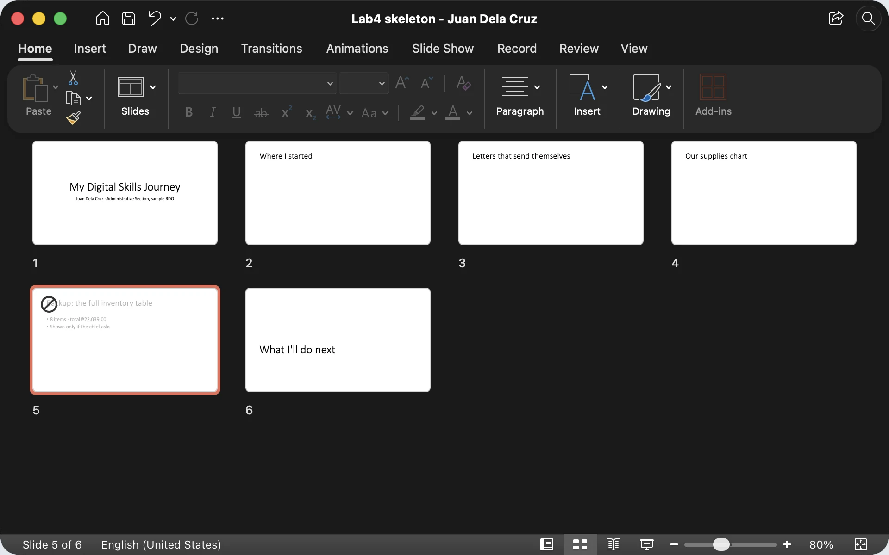
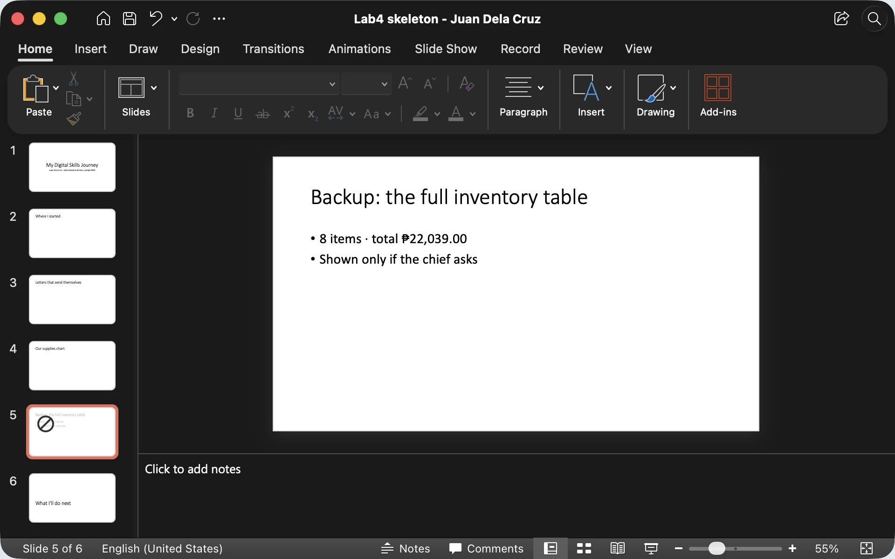
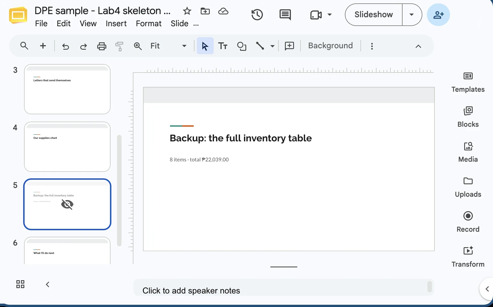
Microsoft PowerPoint for Mac (frames 1, 2) and Google Slides (frames 3, 4), sample Lab 4 skeleton.
The big picture
Slide Sorter, sections and hidden slides
- Slide Sorter shows all slides as tiles: best for reordering a long deck. PowerPoint and Impress: View › Slide Sorter. Google Slides: View › Grid view.
- Hide Slide keeps a backup slide in the file but skips it in the show. PowerPoint: right-click › Hide Slide.
- Google Slides: right-click › Skip slide.
- The thumbnail shows a crossed-out eye: skipped in the slideshow.
- Sections group slides under names (PowerPoint: right-click between slides › Add Section).
Demo the Slide Sorter view and drag a tile. Then add a section in PowerPoint by right-clicking between two thumbnails. Sections are a PowerPoint feature; in Google Slides and Impress, a Section Header slide does the same job for the audience.
The hidden slide is a great office trick: keep the detailed inventory table as a backup. If the section chief asks "how did you get that total?", jump to it. Otherwise nobody sees it.
Microsoft PowerPoint for Mac. The same four view buttons sit at the bottom right on Windows; all five views are on the View tab.
Views · View tab and status bar
Five views, five jobs
- Normal: where you build (thumbnails, slide, notes). First of the four buttons.
- Slide Sorter: all slides as tiles to reorder and review.
- Reading View: plays the show inside the window. Good for checking alone.
- Slide Show: full screen, what the audience sees.
- Presenter View: your private screen with notes, next slide and timer.
Click through each view on your own screen. Reading View is underused: it's perfect for checking your deck while still seeing the taskbar and other windows.
Google Slides keeps it simpler: the editor, Grid view, and Slideshow with a Presenter view option. Impress has Normal, Outline, Notes, Slide Sorter and the Presenter Console. Ask: "Which view would you use to check the order of 20 slides?" Slide Sorter.
Bond paper is our biggest cost. Pause. Ask the chief about reordering this week.
Presenter View
The audience sees the slide; you see your notes
- PowerPoint: Slide Show tab › tick Use Presenter View, or press Alt + F5.
- Google Slides: Slideshow ▾ › Presenter view.
- Impress: the Presenter Console opens on a second screen.
- Online: with one monitor, practise first: share only the slide show window, never your notes.
With a projector or a second monitor, PowerPoint shows Presenter View on your laptop and the clean slide on the projector automatically.
For Zoom or Meet on a single screen, it gets tricky: practise sharing the correct window before the real meeting. A safe fallback is to print your notes or keep them on your phone. Honest confession: I read my notes in presenter mode right now, and you only see the slide.
During the slide show
Eight keys that make you look like a pro
Demo every key live. The favourite is B for black: when discussion starts, press B so everyone looks at the speaker instead of the slide. Press B again to come back.
Number plus Enter is how you jump to a hidden backup slide during Q and A. Shift+F5 saves time when you're fixing slide 7 and want to test it. Ask: "Which key would you press when the section chief starts asking questions?" B.
Try it now · in your app
Rehearse with the show keys
- Press F5. Go forward with Space and back with ←.
- Type 4 then Enter to jump to slide 4.
- Press B. The screen goes black. Press B again.
- Press Esc. Click slide 3, then press Shift + F5.
- Right-click slide 5 › Hide Slide, run the show and confirm it's skipped.
- Unhide it, then open View › Slide Sorter and back to Normal.
Start the 3-minute timer. Participants practise on their own five-slide skeleton.
Laptop users: F5 might need the Fn key, because on many laptops F5 controls brightness or volume. If F5 doesn't work, try Fn + F5, or click the Slide Show icon on the status bar. Google Slides users skip step 5's wording and use Skip slide.
Room check · 2 minutes before
Test in the real room before people arrive
- Connect the projector or TV, then press Win + P and choose Duplicate or Extend.
- Run F5 once: are the fonts, chart and photos all there?
- Plug in the laptop charger (or a UPS). Brownouts happen.
- Online: open Zoom or Meet, share the slide show window, and ask "Can you see my slide?"
Windows + P opens the projection menu: PC screen only, Duplicate, Extend, Second screen only. Duplicate shows the same thing on both screens. Extend lets PowerPoint put Presenter View on your laptop and the slide on the projector.
Tell a short story: a briefing where the projector showed only the desktop wallpaper while the presenter clicked away. Two minutes of testing prevents that. For online sessions, always ask one participant to confirm what they see.
Use it for real
The same skills, on the job and at home
- Before a briefing: run the show once in the conference room to check the projector and fonts.
- Hide backup slides (the full inventory table) and jump to them during Q and A.
- Press B when the discussion starts; send the chief a PDF afterwards.
- A family reunion or birthday slideshow on the TV: Slide Show view, one photo per slide.
- Reorder the photos by dragging tiles in the Slide Sorter: oldest to newest.
- Send the PDF to the family group chat for relatives abroad.
Walk through both columns. The office habit that saves the most embarrassment is the test run in the real room, especially in older conference rooms with VGA cables and power interruptions.
At home, the Slide Sorter is perfect for arranging photos for a parent's birthday or a debut. Ask in the chat: "What slideshow will you make for your family this Christmas season?"
Save and share
Save the editable file, share a PDF
PowerPoint
Ctrl + S saves the .pptx.
PDF: File › Export › Create PDF/XPS, or File › Save As and choose PDF.
Google Slides
Saves automatically to Drive.
PDF: File › Download › PDF document (.pdf).
Impress
Ctrl + S saves the .odp (or Save As .pptx).
PDF: File › Export as › Export as PDF.
Demo the PowerPoint export and open the PDF to show it. Explain the two-file habit: the .pptx is your working copy; the PDF is for sharing, like sending the briefing deck to the section chief or the family group chat.
File name tip: Lab4 - Juan Dela Cruz - My Digital Skills Journey. Clear names help everyone, including the Resource Person who checks 30 labs. Ask everyone to export a PDF of their skeleton now, just to practise.
Watch · 4½ minutes
Know the window, manage the slides, run the show
A tour of the presentation window, then themes, layouts, new and hidden slides, the views, the show keys like F5 and B, and saving a PDF.
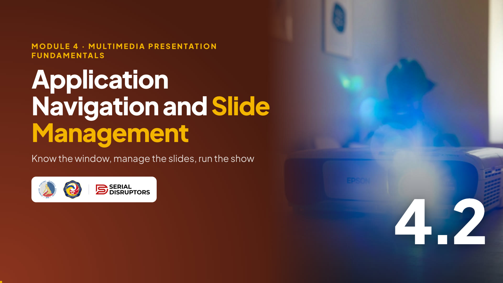
4:38Introduce the video in one or two sentences, then read the While watching task aloud so everyone knows what to look for.
Press → to open the video full screen. In Zoom or Meet, share this tab with computer sound turned on.
Space or K plays and pauses (or click the video). C turns captions on or off; the speed button offers 1.25× and 0.85×. The arrows still move between slides, and the video pauses when you leave this slide.
Length 4:38. Pause anywhere to take a question; captions stay on screen for anyone without sound.
After the video, go back to the While watching task: ask two or three people for their answers.
Quick check · click an answer
Mid-presentation, the chief starts asking questions. You want everyone to look at you, not the slide. You press…
Let them type A, B, C or D in the chat first, then reveal. B is right.
Mention W for a white screen too, useful when you want to draw attention to a whiteboard in the room. Ask a follow-up: "And how do you jump to hidden backup slide 5?" Type 5, then Enter.
Recap · Topic 4.2
Know the window, manage the slides, run the show.
Navigate
Ribbon or menus, thumbnails, slide pane, notes, status bar.
Manage
One theme, varied layouts; Ctrl+M, Ctrl+D, drag, hide, sections.
Present
F5, Shift+F5, B, Esc, Presenter View; save the file, share a PDF.
Next · 4.3 Working with Text and Lists in Slides: filling those slides with words people can read.
Summarize: navigate, manage, present. Everyone should now have a saved Lab 4 skeleton with a theme and titled slides.
Bridge to 4.3: "Our slides have titles. Next we add the text and bullet points, and learn how to keep them short and readable." Ask everyone to press Ctrl+S one more time. Salamat!